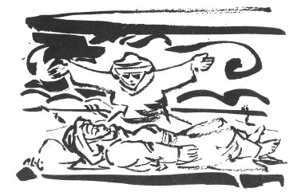

YEMEN AĞIDI
1911'de Mehmet ve Memiş adlı Çukurovalı iki kardeş asker olarak Yemene gidiyorlar ve bir daha dönmüyorlar. Bu ağıdı, şehitlerin bacısı yakıyor.
Gara çadır is mi dutar
Martin tüfek pas mı dutar
Ağlıyalım anam bacım
Elin gızı yas mı dutar
Günden yanı soldumola
Yerden yanı uldumola
Memmedimin ala gözün
Garınçalar oydumola
Basma fistan kirlenirse
Başda püsgül fırlanırsa
Ya kimlere baba desin
Senin bebek dillenirse
Getme Yemene Yemene
Garışın toza dumana
Mekdubunu sal gardaşım
Bacını goma gümana
Getme Yemene Yemene
Yemen sıcak dayanaman
Dang borusu er vurulur
Sen cahalsın uyanaman
Getme Yemene Yemene
Yemen sıcak gayfa bişer
Esger talime çıkışın
Aceminin aklı şaşar
Tarlalarda biter gamış
Uzar gider, vermez yemiş
Çöl Yemende can verenner
Biri Mehmet biri Memiş
Bu ağıdı daha sonra Kadirlinin Yalnızdut köyünden derledim. Ağıdı yakan Yalnızdutlu yaşlı bir kadındı. Memetle Memişin kız kardeşiydi. 1911 olduğuna göre Trablus savaşı olacak. Anadoludan, çöle aşağı nereye giderse gitsin orasının adı Yemendir.
Günden yanı soldumola
Yerden yanı uldumola
Güne gelen tarafı soldu mu acaba?
Yere gelen tarafı çürüdü mü acaba?
Anadolunun çok yerinde çürümek yerine ulmak kullanılır. Yalnız kimi yerde anlamları başkadır. Ağaç ulmaz, çürür. Et ular.
Başta püskül fırlanırsa Fesin püskülü fırlanırsa.
Dang borusu Tan borusu
Er Erken
Gayfa Kahve.
Yalnızdutta derlediğim varyantta, "Ağlayalım anam bacım kahpe Osmanlı yas mı tutar", diyordu.
Ben ilk kitapta çıkanı, "Elin kızı yas mı tutar"ı koydum.